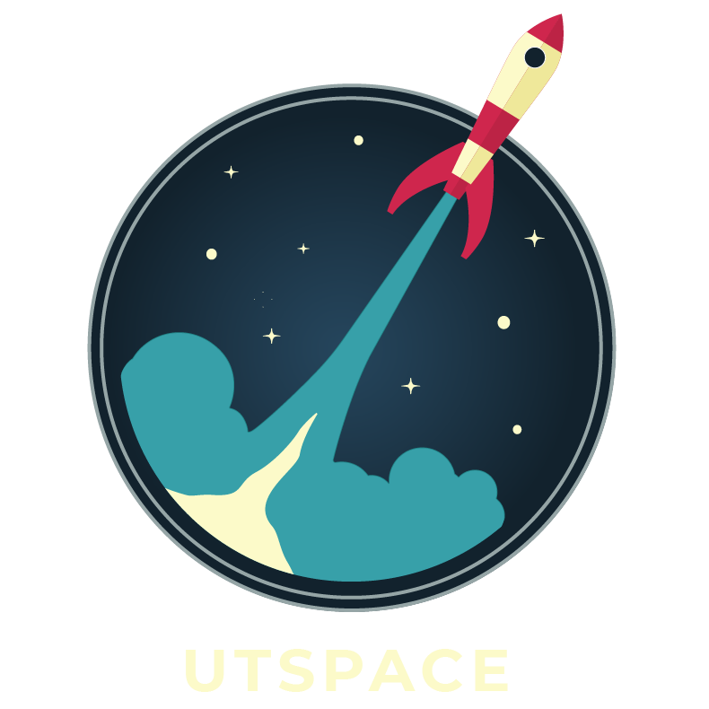
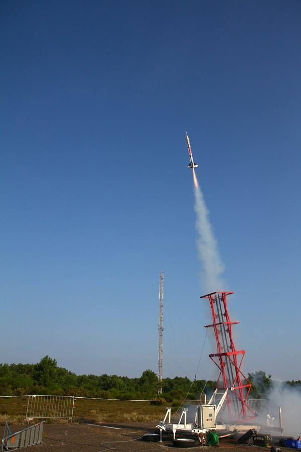

<!DOCTYPE html>
<html lang="fr">
<head>
	<meta charset="utf-8">
	<meta http-equiv="Content-Type" content="text/html; charset=UTF-8">
	<meta name="viewport" content="width=device-width, initial-scale=1.0">
	<title>UTSpace</title>
	<link rel="icon" type="image/png" href="./img/logo_full.png">
	<meta name="theme-color" content="#000000">
	<meta name="author" content="UTSpace">
	<meta name="keywords" content="UTSpace,UTC,espace,ingenieur,spatial,fusée,étudiant,C'Space">
	<meta name="description" content="UTSpace est l'association étudiante d'ingénierie spatiale de l'UTC.">
	<link rel="apple-touch-icon" href="./img/logo_full.png">
	<meta name="apple-mobile-web-app-capable" content="yes">
	<meta name="apple-mobile-web-app-status-bar-style" content="black">
	<meta name="twitter:card" content="summary">
	<meta name="twitter:title" content="UTSpace">
	<meta name="twitter:description" content="UTSpace est l'association étudiante d'ingénierie spatiale de l'UTC.">
	<meta name="twitter:image" content="./img/logo_full.png">
	<meta property="og:type" content="website">
	<meta property="og:locale" content="fr_FR">
	<meta property="og:site_name" content="UTSpace">
	<meta property="og:title" content="UTSpace">
	<meta property="og:description" content="UTSpace est l'association étudiante d'ingénierie spatiale de l'UTC.">
	<meta property="og:image:width" content="790">
	<meta property="og:image:height" content="790">
	<meta property="og:image" content="./img/logo_full.png">
	<meta property="og:url" content="http://assos.utc.fr/utspace/">

	<link rel="stylesheet" href="https://stackpath.bootstrapcdn.com/bootstrap/4.1.0/css/bootstrap.min.css" integrity="sha384-9gVQ4dYFwwWSjIDZnLEWnxCjeSWFphJiwGPXr1jddIhOegiu1FwO5qRGvFXOdJZ4" crossorigin="anonymous">
	<link rel="stylesheet" href="./css/style.css" type="text/css">
	<script src="./js/wow.min.js"></script>
	<script>new WOW().init();</script>
</head>

<body>
	<nav id="navbar" class="animated fadeInDown navbar navbar-expand-md navbar-dark fixed-top py-0">
		<a class="nav-link navbar-brand d-md-none" href="#">
			
		</a>
		<button class="navbar-toggler" type="button" data-toggle="collapse" data-target="#menu" aria-controls="menu" aria-expanded="false" aria-label="Toggle navigation">
			<span class="navbar-toggler-icon"></span>
		</button>
		<div class="navbar-collapse collapse" id="menu">
			<ul class="navbar-nav mx-auto text-center">
				<li><a class="nav-link my-3 left" href="./historique.html">Historique</a></li>
				<li><a class="nav-link active my-3 left" href="./projets.html">Nos projets</a></li>
				<li><a id="logo-web" class="nav-link center navbar-brand px-2 mx-5 d-none d-md-block" href="./index.html">
					
				</a></li>
				<li><a class="nav-link my-3 right" href="./contact.html">Nous contacter</a></li>
				<li><a class="nav-link my-3 right" href="./reseau.html">Réseau</a></li>
			</ul>
		</div>
	</nav>

	<div class="view intro wow fadeIn" style="background-image: url('./img/background.png');" data-wow-duration="3s">
		<div class="displayer displayer-bottom hover-scale p-4 p-lg-5 wow fadeInLeft" data-wow-delay=".5s">
			<h1 class="wow blurUp" data-wow-delay="1.2s">Historique de l'association</h1>
			<p class="lead wow blurUp" data-wow-delay="1.5s">
				UTspace est une association créée en 2011 à l'Université de Technologie de Compiègne pour la formation et la contribution de ses étudiants ingénieurs à l'ingénierie spatiale. Elle est la vitrine du spatiale à l'UTC.
          			L’association est vouée à être un véritable complément à la formation d’ingénieur de l’UTC permettant à ses membres d’orienter leurs compétences dans le domaine de l’aérospatial avec des objectifs de projets toujours plus importants, complexes et innovants nous forçant à nous améliorer et nous dépasser. En parallèle UTspaCe organise des séminaires de formations mis en place avec l’aide de nos partenaires mais aussi des visites d’entreprises, des conférences d’ingénieurs et de spécialistes du Spatiale à l'UTC.
         			Projet en cours : "Prométhée"​ fusée expérimentale intégrant un drone autonome pour réaliser diverses missions, notamment de suivi de l'atterrissage de la fusée et de retour à l’emplacement de lancement de celle-ci. 
			</p>
		</div>
	</div>

		
	<div class="container">

		<div class="row my-5 wow fadeIn" data-wow-duration="2s">
			<div class="col-md-4 img">
				
			</div>
			<div class="col-md-8 bg-dark p-4">
				<div class="semestre hover-border-left my-4 wow fadeInUp">
					<h4>P18 - Projet Prométhée</h4>
					<p>
						Cette année nous concevons une fusée expérimentale nommée Prométhée. Le but étant de créer de A à Z une fusée (à l’exception du moteur) transportant une charge utile. 
						La charge utile peut être ce que l’on souhaite (un CanSat, un étage secondaire, …). Nous avons choisi cette année de créer un drone. 
						Le drone sera donc lui aussi créé de A à Z par UTspaCe et aura pour mission de suivre et d’étudier la retombée de l’étage principal et ainsi nous tenir informer de sa position.
						Cette mission est exceptionnelle dans l’histoire d’UTspaCe.
					</p>
					<div class="d-flex justify-content-between">
						<a class="mb-2 mx-2 link red" target="_blank" href="#">En savoir plus</a>
					</div>
				</div>
				<hr style="border-color: #ddd;" class="wow fadeInRight">
				<div class="semestre hover-border-left my-4 wow fadeInUp">
					<h4>A17 - Conférence sur La surveillance satellitaire de l'ESA : une nécessite pour l'humanité</h4>
					<p>
						Conférence de Monsieur Donny Aminou de ESA organisée à l'UTC le 22 novembre 2017.
						Cette conférence avait pour thème l’observation de la Terre via des satellites, dans les contextes militaires, publiques (Galileo : GPS européen), …), scientifique (réchauffement climatique, climat, …).
					</p>
					<div class="d-flex justify-content-between">
						<a class="mb-2 mx-2 link red" target="_blank" href="https://www.youtube.com/watch?v=gleeQuSP7c4">Vidéo Conférence</a>
					</div>
				</div>
				<hr style="border-color: #ddd;" class="wow fadeInRight">
				<div class="semestre hover-border-left my-4 wow fadeInUp">
					<h4>P14/15 - Projet Pheonix Fusée Transsonique</h4>
					<p>
						Phoenix présente une conception totalement nouvelle par rapport à ses prédécesseurs, Horus et Cronos. 
						Sa structure est majoritairement constituée de matériaux composites et ses ailerons sont en titane, l'un des seuls matériau adapté pour les contraintes liées à un tel vol.
					</p>
					<div class="d-flex justify-content-between">
						<a class="mb-2 mx-2 link red" target="_blank" href="#">En savoir plus</a>
					</div>
				</div>
				<hr style="border-color: #ddd;" class="wow fadeInRight">
				<div class="semestre hover-border-left my-4 wow fadeInUp">
					<h4>P14 - Exposition du CNES à l'UTC au Centre d'Innovation</h4>
					<p>
						Du 3 au 6 juin 2014, le CNES (Centre National d’Etudes Spatiales) présentait une exposition au Centre d’Innovation de l’UTC.
						Les visiteurs ont eu l’occasion de découvrir plusieurs maquettes de lanceurs comme Ariane et des satellites d’observation de la Terre comme Pléiades.
					</p>
					<div class="d-flex justify-content-between">
						<a class="mb-2 mx-2 link red" target="_blank" href="https://webtv.utc.fr/watch_video.php?v=W26YBMDSAMYG">Vidéo de l'UTC</a>
					</div>
				</div>
				<hr style="border-color: #ddd;" class="wow fadeInRight">
				<div class="semestre hover-border-left my-4 wow fadeInUp">
					<h4>P13 - Projet Cronos Fusée experimentale</h4>
					<p>
						Cronos est le second projet mené au bout par UTspaCe. L'expérience acquise avec Horus a permis de développer la première fusée expérimentale de l'association.
						Le vol a eu lieu en août 2013 et s'est parfaitement bien déroulé. La fusée embarquait differentes expériences, notamment une sonde de Pitot (mesure de la vitesse), un GPS differentiel (positionnement de la
						fusée), une turbine pour récupérer une partie de l'énergie du vol et des accéléromètres.
						En termes de performances, cette fusée a (largement) dépassé son prédécesseur, avec notamment une vitesse maximale depassant les 850 km/h et une altitude culminante de plus de 1600 m. L'expérience a été riche en
						enseignements pour les conceptions futures et c'est dans la continuité de ce projet que le nouveau projet,
						baptisés \ Phoenix " a été lancé.
					</p>
					<div class="d-flex justify-content-between">
						<a class="mb-2 mx-2 link red" target="_blank" href="https://interactions.utc.fr/thematiques/mecanique-acoustique-materiaux-electromecanique/cronos-une-fusee-experimentale-pour-lutc.html">Article Intéractions UTC</a>
						<a class="mb-2 mx-2 link red" target="_blank" href="https://www.dailymotion.com/video/x14i1vt">Vidéo lancement</a>
						<a class="mb-2 mx-2 link red" target="_blank" href="https://www.dailymotion.com/video/x14i1vw">Vidéo vol</a>
					</div>
				</div>
				<hr style="border-color: #ddd;" class="wow fadeInRight">
				<div class="semestre hover-border-left my-4 wow fadeInUp">
					<h4>P12 - Projet Horus Mini-fusée</h4>
					<p>
						Horus a été la première fusée conçue par
						UTspaCe. Elle appartient à la catégorie \mini
						fusée" et a remporté le prix du C'Space 2012
						dans cette catégorie.
						Elle a atteint la vitesse de 320km/h, pour
						une altitude maximale de 350 mètres de hau-
						teur et a subit au décollage une accélération de 20g.
						L'objectif principal de ce lancement était de
						maîtriser les differents aspects du vol (stabilite,
						resistance aux efforts, etc.) et c'est l'architecture de cette fusée qui a lancé les bases du projet suivant.
						Le vol a été un succées qui a poussé l'association à concevoir un modèle de fusée expérimentale (catégorie
						supérieure, en termes de taille et de puissance du propulseur).
					</p>
					<div class="d-flex justify-content-between">
						<a class="mb-2 mx-2 link red" target="_blank" href="https://www.youtube.com/watch?v=SmmM2zNnebc">Vidéo de lancement</a>
						<a class="mb-2 mx-2 link red" target="_blank" href="https://www.youtube.com/watch?v=G5iGiI2o_c4&feature=youtu.be">Vidéo de vol à la première personne</a>
					</div>
				</div>
			</div>
		</div>
	</div>

	<script src="https://code.jquery.com/jquery-3.3.1.slim.min.js" integrity="sha384-q8i/X+965DzO0rT7abK41JStQIAqVgRVzpbzo5smXKp4YfRvH+8abtTE1Pi6jizo" crossorigin="anonymous"></script>
	<script src="https://stackpath.bootstrapcdn.com/bootstrap/4.1.0/js/bootstrap.min.js" integrity="sha384-uefMccjFJAIv6A+rW+L4AHf99KvxDjWSu1z9VI8SKNVmz4sk7buKt/6v9KI65qnm" crossorigin="anonymous"></script>
	<script type="text/javascript" charset="utf-8">
		const navbar = document.getElementById("navbar");
		window.addEventListener('scroll', function(e) {
			if (window.scrollY > 100)
				navbar.classList.add("scrolled");
			else
				navbar.classList.remove("scrolled");
		});
	</script>
</body>
</html>
